1 - Introduction
Change data capture (CDC) refers to a software process or design pattern that can detect changes to a source system (such as a database or data warehouse), as you can keep track of changes in near real-time, you can implement processes that achieve data consistency in data sources down the line of the source.
A requirement has come through for your team to implement a CDC system from a source MySQL database to a target RDS database running Postgres. The rest of the team has set up a prototype of the architecture in an EC2 instance, the missing configuration and Flink pipeline have been left for you to develop and finally test the architecture.
2 - CDC Infrastructure
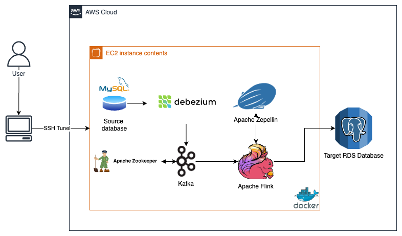
The prototype has mostly been set up using a multi-container approach inside an EC2 instance, you can connect with the EC2 instance using an SSH tunnel. Here is a brief description of the components:
-
Source Database: You already interacted with the source database in previous labs. For the prototype, the team set up a MySQL database inside a Docker container with the
classicmodelsdatabase. -
Debezium: Distributed platform for CDC, it connects to the source system and captures the changes based on the configuration one setup. The UI has been provisioned with the
8080port of the EC2 instance. -
Apache Kafka: The event streaming platform, has already been configured to connect with Debezium, based on your configuration in Debezium topics are created for each table that contains messages with each change.
-
Apache Zookeeper: Service that stores configuration information and allows the coordination of cloud applications.
-
Apache Zeppelin: Web-based notebook environment, it allows us to run Flink in a notebook alongside other possible interpreters. You can access the UI by connecting to the
8085port of the EC2 instance, you can also see the Flink UI with the8086port. -
Apache Flink: Distributed processing engine for data streams, you will use it to connect to the Kafka topics and update the target database accordingly.
-
Target Database: For the prototype, the team set up a Postgres database in an RDS instance with the target schema
classicmodels_star_schema.
3 - Lab and CDC Architecture Setup
3.1 - Lab Setup
Notes:
- For the lab, it is better to use a laptop or desktop computer instead of a tablet.
- The lab uses Amazon Web Services (AWS) which takes some time to spin up. You may need to wait a few minutes for the lab to open.
3.1.1. Click on button (upper right of the screen) to begin the lab. Wait until the link (top left of the screen) will have a green sign next to it.
Note: On the first start of the lab, the lab environment should load in a few seconds, but subsequent attempts may take up to 12 minutes.
3.1.2. When the lab environment is ready, the AWS link will change to green:
(top left of the screen). Click on the AWS link, it will open AWS
Management Console in a new tab. Then you can return to this tab to find
the remaining instructions.
Note: If you see the window like in the following printscreen, click on logout link, close the window and click on link again.

3.1.3. Navigate to the CloudFormation section in the AWS console, click on the alphanumeric ID of the deployed stack and search for the Outputs tab. Through the lab, you will need the values corresponding to the keys ZeppelinUI, DebeziumUI, FlinkUI, and PostgresEndpoint.
3.2 - Zeppelin Interpreters
Configure the interpreters to access the source and target database. In Apache Zeppelin, an interpreter is a plug-in that allows Zeppelin to run code in different languages, in your case it will allow us to run queries in Flink SQL, MySQL and Postgres.
3.2.1. Open a new tab and paste the ZeppelinUI URL to open the Zeppelin UI, it should look like this.
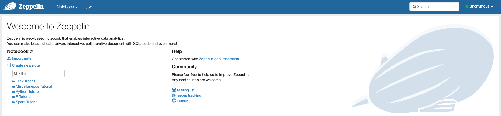
Note: If for any reason the ZeppelinUI or the DebeziumUI present any particular issue, you can restart the containers of the infrastructure by following these steps:
-
In the AWS Console, search for EC2. In the left panel, click on Instances.
-
Search for the instance named
de-c4w3lab1-work-instanceand click on the Instance ID.
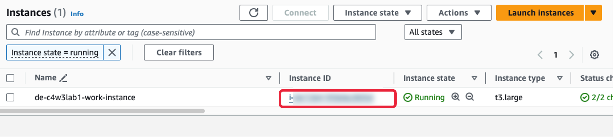
- Click on Connect. Then in the EC2 Instance Connect tab, click on Connect.
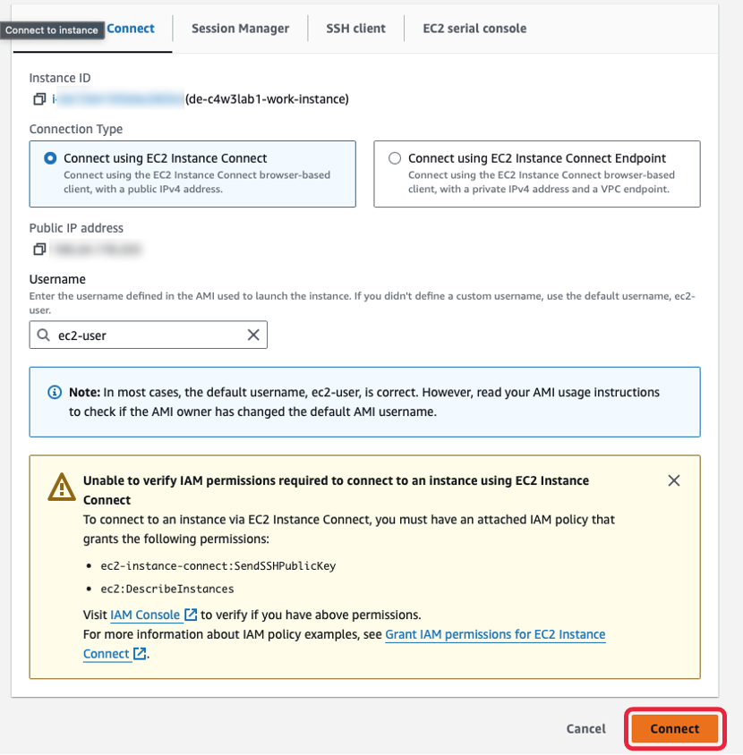
Another browser tab will open; you will be logged inside the EC2 instance.
-
Go to the
/kafka_debeziumfolder with the following command:cd /kafka_debezium -
Execute the commands:
sudo docker compose -f docker-compose-flink.yml down sudo docker compose -f docker-compose-flink.yml up -d -
Wait for around 1 to 2 minutes and then, execute the following command:
curl -i -X POST -H "Accept:application/json" -H "Content-Type:application/json" http://localhost:8083/connectors/ -d @conf/mysql_conf.json -
To check that the Debezium connection is ready, you can go to the
DebeziumUIor run the command:sudo docker compose -f docker-compose-flink.yml exec kafka kafka-topics --bootstrap-server kafka:9092 --list
You should see a list of Kafka topics as output, like in the following image:
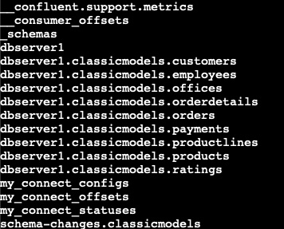
3.2.2. Download locally lab notebook following the link: C4_W3_Lab_1_CDC.zpln. Then in the Zeppelin UI, click on Import note. In the pop-up window, click on Select JSON file/IPYNB file and search for the file you just downloaded, which is named C4_W3_Lab_1_CDC.zpln.
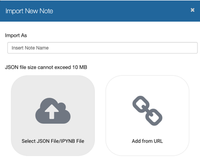
3.2.3. Once you have imported the notebook, you will be able to see it in the Zeppelin UI. Open it by clicking on it's name.
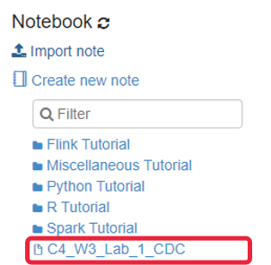
3.2.4. Go to the anonymous dropdown menu in the top right corner, click the menu and select the Interpreter link. You will be guided to the Interpreters page. Create on Create button on the top right of the new page, a form should appear like this one:
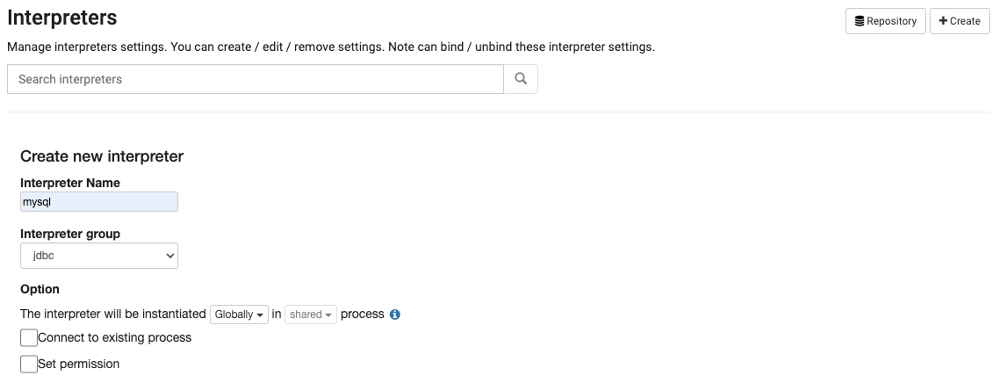
Fill in the new Interpreter name as mysql and select jdbc in the Interpreter group dropdown menu. Then in the properties, put the following values in the fields:
- default.url:
jdbc:mysql://mysql:3306/ - default.user:
root - default.password:
debezium - default.driver:
com.mysql.jdbc.Driver
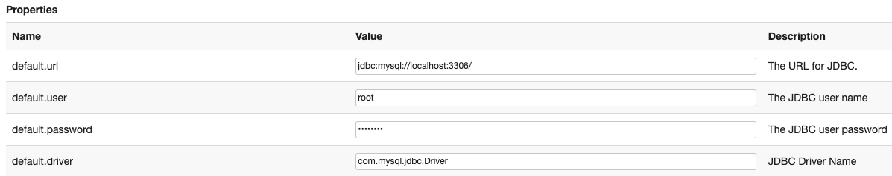
Scroll down and in the Dependencies section, fill the first artifact field with the value mysql:mysql-connector-java:8.0.28, this will tell Zeppelin that it needs this JAR (package file for Java) to run
the interpreter.
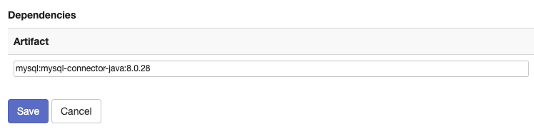
Click on Save button.
3.2.5. Add the Interpreter to connect to the target Postgres
database. Click the Create button on the Interpreter's page again, the
Interpreter name will be psql and the group jdbc.
Then in the properties, put the following values in the fields, replacing the placeholder <POSTGRES_ENDPOINT> with the value of the PostgresEndpoint output (make sure that you replace the whole placeholder, including the brackets <>):
- default.url:
jdbc:postgresql://<POSTGRES_ENDPOINT>:5432/postgres - default.user:
postgresuser - default.password:
adminpwrd - default.driver:
org.postgresql.Driver
Finally, add the artifact org.postgresql:postgresql:42.7.3 in the dependencies section. Finish by clicking on Save button.
3.3 - Debezium Configuration
3.3.1. Open a new tab and paste the DebeziumUI URL from
the CloudFormation outputs. This should show you the Debezium interface,
where you can verify that the connection to the MySQL source database
exists. You should see the following:
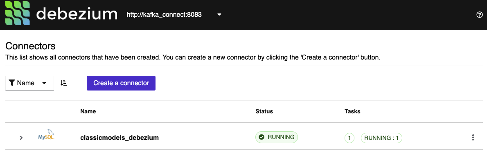
4 - CDC Pipeline and Flink UI
For the CDC Pipeline, you will create a simple star schema architecture based around the classicmodels orders. The target database has a schema named classicmodels_star_schema and the corresponding tables:
- fact_orders: A fact table based on the
ordersandorderlinestables. It contains information for each order item, the order itself, the product and the customer. - dim_customers: A dimensional table based on the information for each client, based on the
customerstable. - dim_products:A dimensional table based on the information for each product, based on the
productsandproductlinestables.
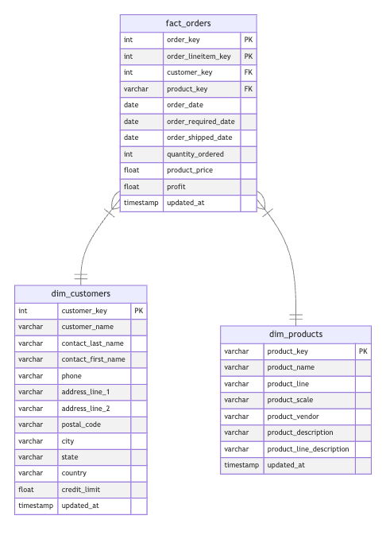
4.1. Using Flink in the Zeppelin UI, you will implement the CDC
pipeline to create and maintain the star schema. You can open the
notebook by either clicking on Zeppelin icon in the top left corner or via the menu Notebook. Follow the instructions in the notebook C4_W3_Lab_1_CDC.zpln.
Note: The notebook contains some practice exercises. Please follow the instructions to complete them. The solution file can be downloaded following the link: C4_W3_Lab_1_CDC_Solution.zpln
4.2 In order to access the Flink UI to see the running job, you can use the FlinkUI
value from the CloudFormation Outputs. Take into account that the Flink
UI won't be available until you execute any cell that starts with the
magic command %flink.ssql.
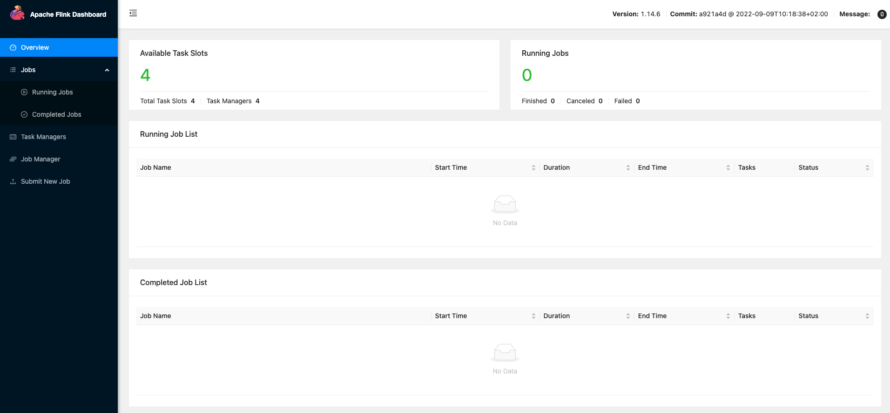
In that UI, you will see that there are 4 available Task Slots. Each
task slot represents a fixed subset of resources of the Flink
TaskManager, so each time you execute a cell that requires processing a
streaming of data, such as the INSERT statement shown before, a Task Slot will be in use. Make sure to follow the instructions in the C4_W3_Lab_1_CDC.zpln notebook to stop the necessary cells in order to free the Task Slots during the lab when required.
5 - Lab Submission
5.1. Click on button to complete the lab. If you want to verify whether the lab is successfully completed, click on button.
Note: The AWS account, which was created for the lab, expires within 2 hours.
During this period you can close all of the console windows and come
back to your work later. After the expiration the current AWS account
will go through a cleanup procedure (which will take up to 25 minutes),
then the access to the new account will take longer (up to 15 minutes)
and your previous work will not be saved. Save the notebooks or any other files locally before the expiration (use export buttons in the Zeppelin UI to download the notebook in the .zpln or .ipynb format).
5.2. Close all the windows of the AWS Management Console and go back to Coursera.